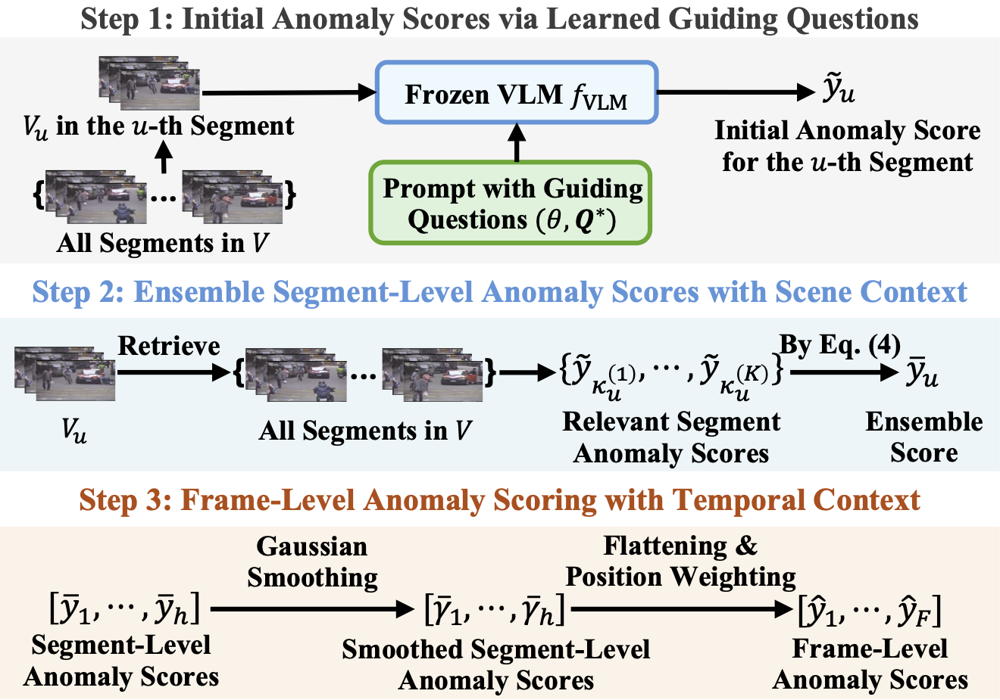

VERA renders frozen vision-language models (VLMs) to describe and reason with learnable guiding questions learned from coarsely labeled data. Compared to existing pipelines that use VLMs for video anomaly detection, VERA do not need extra reasoning modules or additional instruction tuning on extra annotated data.
Abstract
The rapid advancement of vision-language models (VLMs) has established a new paradigm in video anomaly detection (VAD): leveraging VLMs to simultaneously detect anomalies and provide comprehendible explanations for the decisions. Existing work in this direction often assumes the complex reasoning required for VAD exceeds the capabilities of pretrained VLMs. Consequently, these approaches either incorporate specialized reasoning modules during inference or rely on instruction tuning datasets through additional training to adapt VLMs for VAD. However, such strategies often incur substantial computational costs or data annotation overhead. To address these challenges in explainable VAD, we introduce a verbalized learning framework named VERA that enables VLMs to perform VAD without model parameter modifications. Specifically, VERA automatically decomposes the complex reasoning required for VAD into reflections on simpler, more focused guiding questions capturing distinct abnormal patterns. It treats these reflective questions as learnable parameters and optimizes them through data-driven verbal interactions between learner and optimizer VLMs, using coarsely labeled training data. During inference, VERA embeds the learned questions into model prompts to guide VLMs in generating segment-level anomaly scores, which are then refined into frame-level scores via the fusion of scene and temporal contexts. Experimental results on challenging benchmarks demonstrate that the learned questions of VERA are highly adaptable, significantly improving both detection performance and explainability of VLMs for VAD.
Training in VERA
VERA aims to learn guiding questions that break down a complex and ambiguous concept (i.e., what is an "anomaly") into a set of identifiable anomalous patterns to unlock reasoning capabilities within frozen VLMs for VAD. Since those patterns vary among datasets, using manually designed descriptions is ineffective for generalization. The key idea of VERA is using a general verbalized learning framework shown in the figure below to generate the desired guiding questions automatically.
VERA regards the guiding questions for VAD as learnable parameters and optimizes them by the feedback from the optimizer based on the performance of the learner in the learning task.
As shown in the figure above, VERA inherits the idea of verbalized machine learning in training: optimizing language-based parameters by the iterative verbal communication between a learner agent and an optimizer agent, rather than by numerical optimization algorithms. The learner will first make predictions on a batch of training data (sampled video frames and coarsely labeled annotations), and the optimizer will judge the performance of the learner in the designed binary classification task and provide feedback on the choice of guiding questions. They are modeled by the same VLMs in training with different instructions detailed in the template.
Inference in VERA
Given a set of learned guiding questions, VERA yields fine-grained anomaly scores for each frame in a test video via a coarse-to-fine process shown in the figure below. Step 1 is to ask the VLM to provide an initial anomaly score for each segment. Step 2 is to utilize the scene context and compute an ensemble score for each segment after considering its similar scenes. Step 3 is to generate a frame-level anomaly score for each frame by fusing temporal context with segment-level Gaussian smoothing and frame-level position weighting.

After finding the optimal guiding questions, VERA computes anomaly scores in three steps.
When using the learner template embedded with the learned guiding questions to compute the anomaly score, we ask the VLM to "provide an explanation in one sentence" when reasoning, and VLM will explain the anomaly score it assigns afterward based on the learned guiding questions. The instruction-following property of VLMs help us attain explainable VAD prediction.
Qualitative Results
We take an abnormal video (RoadAccidents127_x264) from the UCF-Crime dataset to demonstrate the explainable VAD provided by a frozen VLM (InternVL2-8B) achieved by using the learned guiding questions via VERA. The complete video is as follows:
The questions learned by the VERA are as follows:
Are there any people in the video who are not in their typical positions or engaging in activities that are not consistent with their usual behavior?
Are there any vehicles in the video that are not in their typical positions or being used in a way that is not consistent with their usual function?
Are there any objects in the video that are not in their typical positions or being used in a way that is not consistent with their usual function?
Is there any visible damage or unusual movement in the video that indicates an anomaly?
Are there any unusual sounds or noises in the video that suggest an anomaly?
we select 6 representative scenes in the this video and show the corresponding explanation provided by the frozen VLM as follows. The main anomaly in this video is a traffic accident where a truck crashes into a train from Frame 2160 to Frame 2299, which corresponds to the 5th scene below. In particular, the learned question "Is there any visible damage or unusual movement in the video that indicates an anomaly?" makes the frozen VLM find a good way to express what it sees in the 5th scene and understand this is an anomaly because the crash is unusual and dangerous. The other scenes are also well explained by the frozen VLM under the learned guiding questions. Thus, this verifies that the learned guiding questions can successfully trigger reasonable explanations in the adopted frozen VLM for VAD.
VERA's Explanation for Scene 1: The video shows a red truck driving on a road with other vehicles and pedestrians. The truck appears to be in its typical position and engaging in a consistent activity. Therefore, there is no anomaly in the video.
VERA's Explanation for Scene 2: The video shows people crossing the street, but one person is not in a typical position and is running, which could be an anomaly. Based on the analysis, there is an anomaly in the video.
VERA's Explanation for Scene 3: There are no people in the video, and the vehicles and objects are in their typical positions and functions. There is no visible damage or unusual movement, and no unusual sounds or noises are present. Therefore, there is no anomaly in the video.
VERA's Explanation for Scene 4: There are no people in the video, and the vehicles and objects are in their typical positions and functions. There is no visible damage or unusual movement, and no unusual sounds or noises are present. Therefore, there is no anomaly in the video.
VERA's Explanation for Scene 5: The video shows a red truck colliding with a train at a crossing. This is an unusual and dangerous situation, indicating an anomaly.
VERA's Explanation for Scene 6: The video shows a train on the tracks, and there are no people or vehicles in unusual positions or engaging in activities that are not consistent with their usual behavior. Based on the analysis, there is no anomaly in the video.
We include the anomaly scores generated by VERA for the entire video video here. We can see most frames are assigned to zero except when someone crosses the road at an unusual speed (the 2nd scene above) and the truck-train crash happens (the 5th scene above). This fluctuation is aligned with the ground truth annotation and common sense about an anomaly, which shows that the anomaly scoring proposed in VERA is reasonable.
BibTeX
@misc{ye2024veraexplainablevideoanomaly,
title={VERA: Explainable Video Anomaly Detection via Verbalized Learning of Vision-Language Models},
author={Muchao Ye and Weiyang Liu and Pan He},
year={2024},
eprint={2412.01095},
archivePrefix={arXiv},
primaryClass={cs.AI},
url={https://arxiv.org/abs/2412.01095},
}